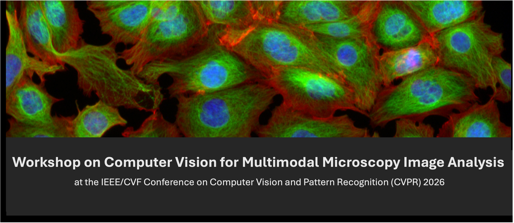

Accepted Papers
| Paper ID | Title | Authors |
|---|---|---|
| 6 | Sampling-Aware 3D Spatial Analysis in Multiplexed Imaging | Ido Harlev (Weizmann Institute of Science) Tamar Oukhanov (Weizmann Institute of Science) Raz Ben-Uri (Weizmann Institute of Science) Leeat Keren (Weizmann Institute of Science) Shai Bagon (Weizmann Institute of Science)* |
| 8 | Cross-Modal Knowledge Distillation from Spatial Transcriptomics to Histology | Arbel Hizmi (Weizmann: Reichman)* Artemii Bakulin (Weizmann) Nir Yosef (Weizmann) Shai Bagon (Weizmann) |
| 11 | Is Realism Enough? Evaluating Generative Models in Cell Microscopy | Duway Lesmes-Leon (University of Kaiserslautern-Landau (RPTU))* Fabian Schmeisser (University of Kaiserslautern-Landau (RPTU)) Gillian Lovell (Sartorius) Andreas Dengel (University of Kaiserslautern-Landau (RPTU)) Sheraz Ahmed (German Research Center for Artificial Intelligence (DFKI)) 1 |
| 12 | Physics-Informed Spectral Reconstruction for Low-SNR Raman Spectroscopy with Peak-Preserving Constraints/td> | Tanvi Ranga (The State University of NewYork at Buffalo)* Varun Chandola (The State University of NewYork at Buffalo) Nalini Ratha (The State University of NewYork at Buffalo) Davoud Davoud Adinehloo (The State University of NewYork at Buffalo) |
| 15 | Vision and Foundation Models for Automated ASTM Grain Size Estimation from Microscopy Images | Abdul Mueez (University of Central Florida)* Shruti Vyas (University of Central Florida) |
| 16 | Automated Membrane Detection and Subtraction for Structure Determination of Membrane Proteins in Cryogenic Electron Microscopy | Anna Starynska (Yale University)* Christopher JF Cameron ( Biochemistry and Molecular Biophysics, Columbia University) Frederick J. Sigworth ( Yale University) Hemant Tagare (Yale University) |
| 19 | Multimodal for Cervical Cancer1 Histopathology2 Classification and Automated3 Diagnostic Report Generation | Nakasi Rose (Makerere University)* Cosmas Wamozo (Makerere University) Solomon Nsumba (Makerere University) Benjamin Rukundo (Makerere University) Tonny Okecha (Uganda Cancer Institute) Byron Mubiru (Makerere University) |